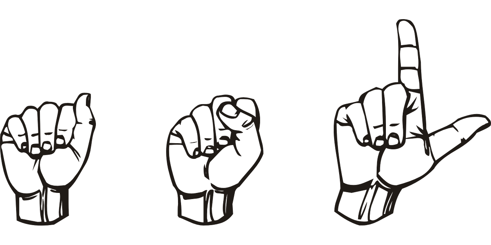

|  | I started learning American Sign Language (ASL) my first year at UVA. I now live in the sign language dorm on Grounds and do everything I can to keep up with ASL when I am away from Grounds. If you know anything about ASL or Deaf culture in America, or wnat to learn more, let's talk! |
|---|---|
| I believe that integrity is my most important quality. It is not always easy to choose the right path, but it is necessary. I try to promote integrity by working with the Honor Systems in my high school and college as well as by generally trying to lead with the level of integrity I expect from others. | |
| Nothing makes me happier than seeing an amazing show, especially if I got to work on it. I love to write and direct short plays! | |
| In high school I was able to live in Boston for a summer, and in college I studied abroad at University College, Oxford for a summer. Traveling and approaching new experiences with an open mind is a must! |